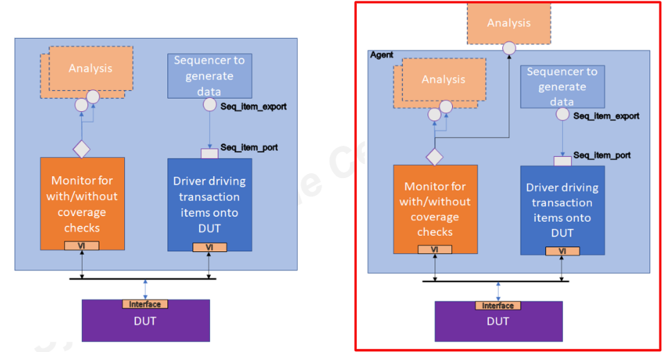
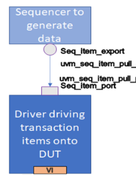
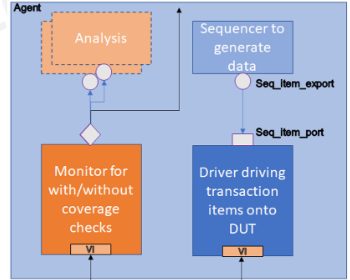
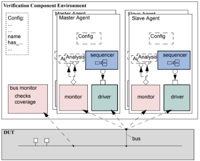

Ideia central
A aula anterior explicou a arquitetura. Esta aula desce para o modo de implementação. O caminho completo é: criar um item de transação, gerar esse item em uma sequence, entregar ao driver por um sequencer, dirigir a interface, observar a resposta no monitor, publicar para scoreboard/coverage e encerrar o teste corretamente.
uvm_sequence_item
-> uvm_sequence / uvm_sequencer
-> uvm_driver
-> DUT/interface
-> uvm_monitor
-> scoreboard + coverage
-> uvm_agent / uvm_env / uvm_testData item: a transação em UVM
O data item é a unidade de estímulo e observação. Em um barramento, pode representar leitura, escrita, endereço, dado, byte enable, burst, delay e resposta. Em um bloco simples, pode representar apenas opcode, operandos e resultado esperado. O ponto é: o item deve carregar a informação necessária para uma operação de alto nível, não os detalhes temporais de cada sinal.
class simple_item extends uvm_sequence_item;
rand int unsigned addr;
rand int unsigned data;
rand int unsigned delay;
constraint legal_addr { addr inside {[0:255]}; }
constraint legal_delay { delay inside {[0:10]}; }
`uvm_object_utils_begin(simple_item)
`uvm_field_int(addr, UVM_ALL_ON)
`uvm_field_int(data, UVM_ALL_ON)
`uvm_field_int(delay, UVM_ALL_ON)
`uvm_object_utils_end
function new(string name = "simple_item");
super.new(name);
endfunction
endclass
A herança de uvm_sequence_item coloca o item no mundo das sequences e sequencers.
As field macros registram campos para automações como print, copy, compare e debug. Elas não
substituem pensamento de verificação; elas reduzem código repetitivo.
Knobs: controle abstrato de estímulo
Knobs são campos de controle que ajudam a escrever testes sem mexer em todas as constraints internas. Em vez de o teste conhecer cada faixa de delay, cada corner case e cada distribuição, ele ajusta um parâmetro de intenção: curto, médio, longo, burst, idle, modo erro, modo normal etc.
typedef enum { SHORT_DELAY, MEDIUM_DELAY, LONG_DELAY } delay_kind_e;
class simple_item extends uvm_sequence_item;
rand int unsigned delay;
rand delay_kind_e delay_kind;
constraint delay_by_kind {
delay_kind == SHORT_DELAY -> delay inside {[0:2]};
delay_kind == MEDIUM_DELAY -> delay inside {[3:6]};
delay_kind == LONG_DELAY -> delay inside {[7:20]};
}
endclassIsso melhora a escrita de cenários. Um teste pode dizer “quero tráfego com atraso longo” sem copiar regras internas. Quando o ambiente crescer, essa diferença vira manutenção mais simples.
Componentes transacionais
A figura da aula mostra a arquitetura transacional: sequencer gera/fornece dados ao driver, driver dirige a interface, monitor observa a interface e analysis distribui transações para consumidores. A versão recomendada agrupa monitor, driver, sequencer e analysis dentro de um agent.

Driver: contrato com o sequencer
O driver é o tradutor entre transação e sinais. Ele não inventa estímulo; ele pede um item ao sequencer, executa esse item no protocolo real e informa quando terminou. O trio fundamental é:
task run_phase(uvm_phase phase);
forever begin
seq_item_port.get_next_item(req);
drive_item(req);
seq_item_port.item_done();
end
endtask
seq_item_export; o driver consome pelo
seq_item_port. Essa conexão é feita no agent.
Monitor: observação, checks e cobertura
O monitor é passivo. Ele não deve depender do driver, porque a função dele é observar o que ocorreu na interface, inclusive quando o driver está errado. Um bom monitor entende o protocolo: sabe quando uma transação começou, quando terminou, qual dado é válido e em que ciclo a resposta deve ser lida.
class master_monitor extends uvm_monitor;
virtual dut_if vif;
bit checks_enable = 1;
bit coverage_enable = 1;
uvm_analysis_port #(simple_item) ap;
covergroup cov_trans @(cov_transaction);
option.per_instance = 1;
// bins de endereço, operação, atraso, resposta etc.
endgroup
task run_phase(uvm_phase phase);
forever begin
simple_item item = collect_transaction_from_interface();
if (checks_enable)
check_protocol(item);
if (coverage_enable)
cov_transaction.trigger();
ap.write(item);
end
endtask
endclassA aula também mostra que checks e coverage podem ser configuráveis. Isso é útil quando o mesmo monitor é usado em contextos diferentes: às vezes você quer checar tudo; às vezes quer apenas observar e publicar.
uvm_config_db#(bit)::set(this, "master0.monitor", "checks_enable", 0);Factory e configuração
UVM recomenda criar componentes com factory para permitir overrides. Isso aparece de novo nesta aula
quando o ambiente instancia driver, monitor, sequencer e agents. A configuração entra com
uvm_config_db, que permite passar virtual interfaces e parâmetros sem criar dependências
rígidas demais.
if (!uvm_config_db #(virtual dut_if)::get(this, "", "vif", vif))
`uvm_fatal("NOVIF",
{"Virtual interface must be set for: ", get_full_name(), ".vif"})Agent ativo e passivo
O agent é a unidade de reutilização de uma interface. Quando ativo, ele instancia monitor, driver e sequencer. Quando passivo, instancia apenas monitor. Isso permite usar o mesmo agent para dirigir um DUT em um teste e apenas observar o mesmo protocolo em outro contexto.

function void build_phase(uvm_phase phase);
super.build_phase(phase);
monitor = my_monitor::type_id::create("monitor", this);
if (is_active == UVM_ACTIVE) begin
sequencer = my_sequencer::type_id::create("sequencer", this);
driver = my_driver ::type_id::create("driver", this);
end
endfunction
function void connect_phase(uvm_phase phase);
if (is_active == UVM_ACTIVE)
driver.seq_item_port.connect(sequencer.seq_item_export);
endfunctionEnvironment configurável
O environment é onde a topologia maior aparece: quantos agents existem, quais são ativos, quais são passivos, onde ficam scoreboards, coverage collectors e monitores globais. A aula mostra um exemplo com múltiplos masters e slaves, típico de barramento.

class ahb_env extends uvm_env;
int num_masters;
ahb_master_agent masters[];
`uvm_component_utils_begin(ahb_env)
`uvm_field_int(num_masters, UVM_ALL_ON)
`uvm_component_utils_end
function void build_phase(uvm_phase phase);
super.build_phase(phase);
masters = new[num_masters];
for (int i = 0; i < num_masters; i++) begin
string inst_name;
$sformat(inst_name, "masters[%0d]", i);
masters[i] = ahb_master_agent::type_id::create(inst_name, this);
end
endfunction
endclassUm teste pode configurar a topologia assim:
uvm_config_db#(int)::set(this, "*my_env", "num_masters", 3);Scenario creation
Criar cenário em UVM não é “dar força bruta nos sinais”. O cenário deve acionar sequences, ajustar knobs, escolher agents ativos e combinar padrões. Esse é o ponto em que o ambiente deixa de ser só uma pilha de classes e vira ferramenta de verificação.
class smoke_test extends uvm_test;
my_env env;
task run_phase(uvm_phase phase);
basic_sequence seq;
phase.raise_objection(this);
seq = basic_sequence::type_id::create("seq");
seq.start(env.master_agent.sequencer);
phase.drop_objection(this);
endtask
endclassEm testes maiores, a sequence pode controlar knobs, repetir tráfego, variar delays, misturar leitura/escrita e chamar sub-sequences. Para prova e laboratório, o importante é reconhecer que a sequence é o lugar natural do roteiro de estímulo.
Fim de teste: objections
Em testbench manual é comum encerrar com #tempo; $finish;. Isso é frágil:
se o DUT demora mais, o teste termina cedo; se demora menos, você desperdiça simulação.
UVM usa objections para declarar que ainda existe atividade relevante em andamento.
task run_phase(uvm_phase phase);
phase.raise_objection(this);
// Atividade principal do teste.
seq.start(env.agent.sequencer);
phase.drop_objection(this);
endtaskEnquanto existe pelo menos uma objection levantada, a phase não termina. Quando todas são derrubadas, UVM pode encerrar a phase. Esse mecanismo é hierárquico e combina melhor com ambientes em que vários agents trabalham ao mesmo tempo.
Como isso vira prática no laboratório
Para adaptar essa aula ao ambiente do professor, a leitura prática é montar um checklist de responsabilidades. Mesmo que o lab não use UVM completo, esses papéis ajudam a organizar o raciocínio.
| Peça | Pergunta que devemos responder |
|---|---|
| DUT/interface | Quais sinais compõem o protocolo? Há ready/valid/reset/clock? |
| Item/transação | Qual operação abstrata representa uma interação com o DUT? |
| Driver | Como a transação vira sinais respeitando ciclos e handshake? |
| Monitor | Como reconstruir a operação real olhando apenas a interface? |
| Scoreboard | Qual modelo simples decide se a resposta está certa? |
| Coverage | Quais casos precisam aparecer para considerar o teste útil? |
| Makefile | Quais targets compilam, simulam, limpam e abrem debug? |
Revisão forte
uvm_sequence_item.
get_next_item(), dirigir a transação, depois item_done().
try_next_item()?
Quando o driver não pode bloquear e precisa continuar dirigindo idle ou comportamento de fundo.
$finish por tempo fixo.